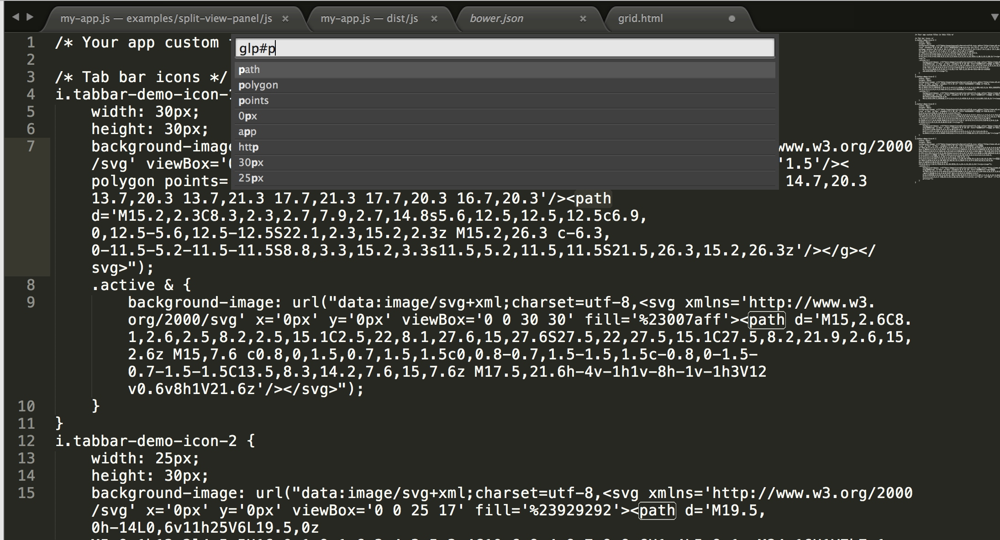

sublime是一个小巧，功能又十分强大得文本编辑器，下面就来介绍下它的几个强大的工恩呢刚
快速文件查找
sublime上 CTRL+P可以查找文件，只用输入其中几个关键字便可找到
另外输入在后面加上#可以并查找文件中的内容，确定后打开文件后跳到指定内容位置

后面加上@+方法名 可以打开文件兵跳转到指定方法行
最后输入：1334可以跳到指定行
多点编辑模式
sublime中按住CRTL建然后在不同位置点击鼠标左键可进入多点编辑模式，另外CTRL+D多次使用可以选取相同字符并自动进入多点编辑模式，非常好用
命令面板
假设一个场景，我想把侧边栏收起来，但是又不记得快捷键，这个时候命令面板就起作用了，打开命令面板CRTL+SHIFT+P，输入toggle side bar然后enter这样就可以了，sublime中所有的操作都可以再命令面板中找到，让大家告别无聊的鼠标
灵活的配置和自定制
sublime中所有的配置都是再json文件中设置，一般有连个default和user我们如果要修改某些配置，只需要再user文件中修改，会自动覆盖default的配置，sublime有许许多多的插件，只要花点心思找些插件包，便可以配置成一个符合你习惯的完美的编辑器